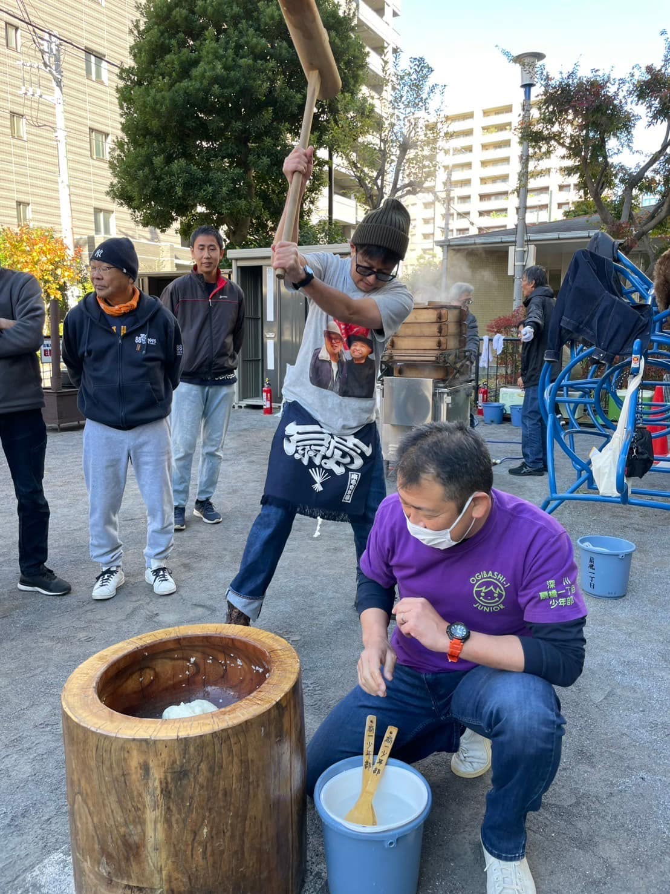
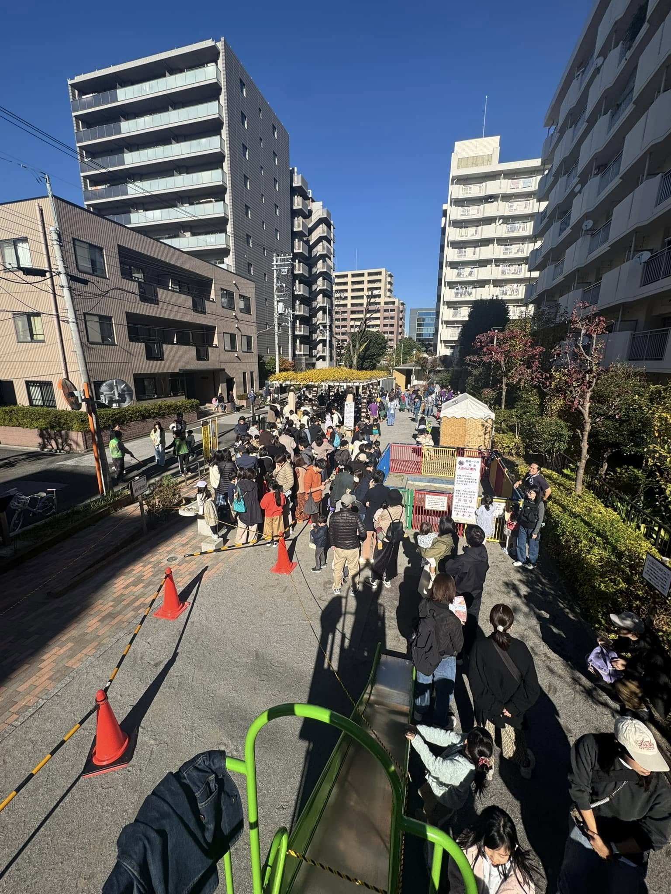
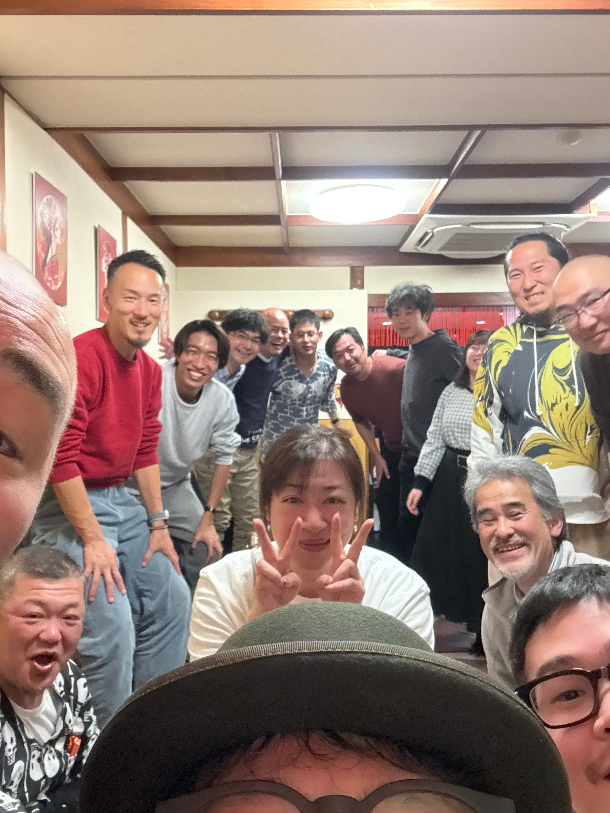

About Me
こんにちは、阿久津 琉生です。
私は学生でスーパーのレジ係として働いています。
私の興味は地域コミュニティです。
SNS
Skills
- 状況把握力
- 柔 軟 性
- 働きかけ力
Experience
私は地域コミュニティの青年部として５年の経験があります。これまでに江東区扇橋一丁目で働き、オリジナルグッズ制作に携わりました。
Hobbies
趣味はEスポーツやお祭りなどです。休日はEスポーツとプログラミング(HTML・3か月)の勉強をしています。
Blog
最新の投稿はこちら↓
2024年12月1日 扇橋一丁目お餅つき大会＆青年部忘年会
朝7時集合。晴れた空の下、扇橋一丁目ではお餅つき大会が行われました。2024年もあと1ヶ月。残るイベントもあとわずか、扇橋一丁目にお住まいの方がたくさん参加されました。青年部中心にお餅をつき婦人会,少年部が味付けとパック詰め。町会組織一丸となって行う冬の最大イベント。今年も無事開催できて良かったです。夜は青年部の忘年会近くの中華料理屋で行われました。改めて扇橋一丁目青年部に入れて良かったと思う1日でした。


